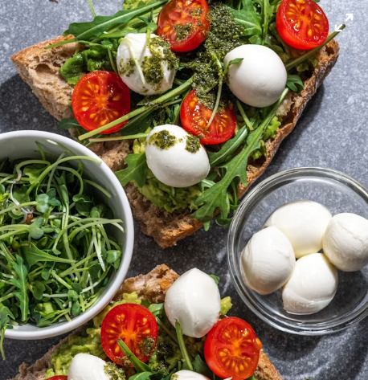

Baked Caprese Bread Recipe
Homepage

Description
This dish is super simple, warm, packed with flavor, and features the same delicious melted cheese as lasagna.
Difficulty: ⭐️☆☆☆☆ (Super simple)
Prep & Bake Time
- Prep time: 5 minutes
- Bake time: 10 minutes
Ingredients (serves 2)
- 1 large ciabatta bread (or 2 baguettes)
- 1 ball of mozzarella (sliced)
- 2 ripe tomatoes (sliced)
- 2 tablespoons of green pesto
- 1 tablespoon of olive oil
- Fresh basil, salt, and pepper
Step-by-Step Instructions
- Slice the bread: Preheat the oven to 200°C (390°F). Slice the ciabatta in
half lengthwise.
- Spread: Spread both halves with a generous layer of green pesto.
- Assemble: Alternate the slices of tomato and mozzarella across the bread. Season with a bit
of salt, pepper, and a small drizzle of olive oil.
- Bake: Bake the bread in the oven for 8 to 10 minutes until the mozzarella
is completely melted and the edges of the bread are nice and crispy.
- Finish: Garnish with fresh basil leaves and slice into pieces.